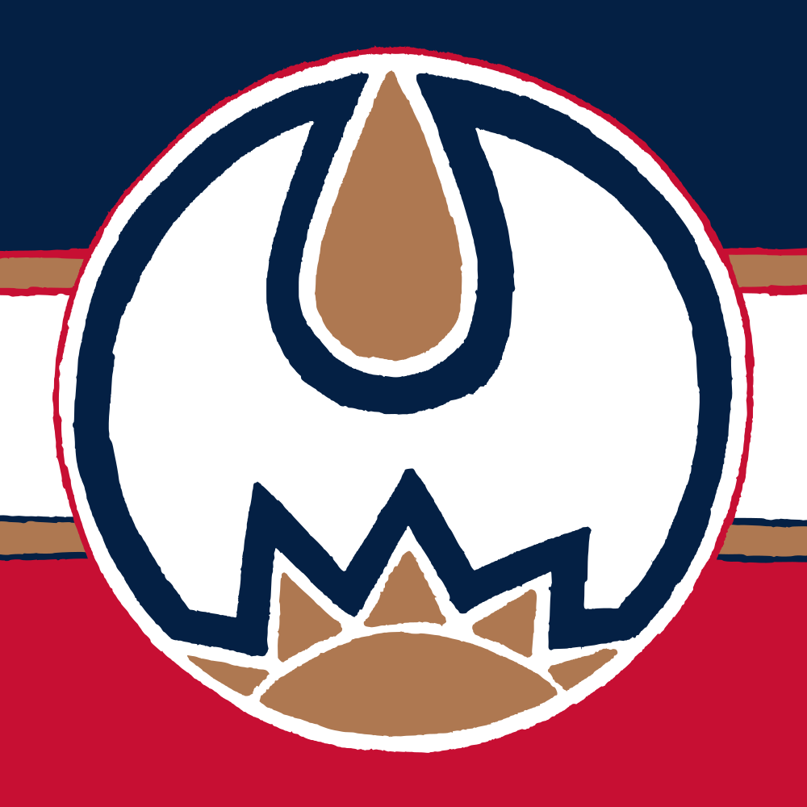

Championship Posters
Starting with Super Bowl LVI, I started creating illustrations to represent the teams in each of the big four North American men’s pro sports championships. Usually I take inspiration from uniform or logo elements.
Super Bowl LVI
Los Angeles Chargers 23, Cincinnati Bengals 20
“Los Angeles @ Cincinnati @ Los Angeles”
I can’t think of another team in any sport, besides the Rams, who uses a spiral motif, so I wanted to emphasize that. Using two different sets of spirals, the background and the eyes, was meant to show that the Rams were both a participant in the game and the host of the game, as it was played in their stadium.
2022 NBA Finals
Golden State Warriors 4, Boston Celtics 2
“San Francisco vs Bay State”
Warriors blue and yellow combine to make Celtics green. The design uses the Celtics’ famous parquet floor to create the icons of the two teams: the Bay Bridge and a shamrock, respectively. I like that Golden State uses the state nickname in their team name; they’re the only big four team to do it, but as I’ve written about, I’m fascinated by state nicknames.
2022 Stanley Cup Finals
Colorado Avalanche 4, Tampa Bay Lightning 2
“Avalanches vs Lightnings”
I liked the idea that both teams could be represented by zigzags. Tampa’s is pretty clear, but Colorado’s is based on the mountains around the waist of their jerseys and the flag of the city of Denver.
2022 World Series
Houston Astros 4, Philadelphia Phillies 2
“Phillies vs Houies”
Astros “tequila sunrise” fades into Phillies red and royal, then Phillies burgundy and powder blue.
Super Bowl LVII
Kansas City 38, Philadelphia Eagles 35
I didn’t want to play up KC’s indigenous imagery, so I stayed simple here by contrasting the texture of the Eagles’ wing with the edge of KC’s arrowhead.
2023 NBA Finals
Denver Nuggets 4, Miami Heat 1
This was a pretty straightforward combination of the Nuggets’ mountain with the Heat’s flames.
2023 Stanley Cup Finals
Vegas Golden Knights 4, Florida Panthers 1
“Nevada Knights vs Lauderdale Golden Panthers”
These two teams have a surprising number of common aesthetic elements. Both use gold prominently, along with red and a darker shade, black and grey for Vegas and navy for Florida. Both have shields in their logos. I averaged a colour between Vegas grey and Florida navy for the background and picked a shield shape somewhere between the two. The main imagery was a split between the Knights’ mask and the Panther head, but I went back to the superior front-facing panther for inspiration, specifically the simplified one in the roundel. When Florida went through their most recent redesign, they introduced an updated front-facing panther but then never used it on a jersey, which is a waste because it’s a much more impactful logo.
2023 World Series
Texas Rangers 4, Arizona Diamondbacks 1
“Texa-zona Ranger-backs”
While not geographically the southwestern-most World Series (I’m thinking Giants versus Angels in 2002 probably was?) this must have been the most southwestern themed. Thinking about snakes and cowboy hats, I decided to combine them in something that would look like an old-fashioned tattoo. And while the Rangers haven’t used cowboy boots in their iconography as much as hats, I couldn’t pass up an alternate “There’s a snake in my boot!” design.
Super Bowl LVIII
Kansas City 25, San Francisco 49ers 22
“Kan Francisco”
I was hoping Baltimore would win the AFC championship so that I could do a design based on the Maryland flag, but this turned out OK too. The obvious link for me was the very similar monograms these two teams have. From there I extrapolated similar monograms for every team in the league and included those in the teams’ most unique colours, to maximize variety. Of course I let SF and KC stand out in the middle, and generally kept NFC teams on the left and AFC on the right, with playoff teams closer to the centre.
2024 NBA Finals
Boston Celtics 4, Dallas Mavericks 1
“First ever all-‘*ic(k)(s)’ NBA finals match-up. Among five NBA teams with ‘*ic(k)(s)’ names (Celtics, Knicks, Magic, Mavericks, Supersonics), no pair had ever faced off in the finals before this year.”
The Mavericks’ ‘M’ fits into the Celtics’ shamrock well. The background is half parquet for the Celtics and half a wavy pattern inspired by the Mavericks’ infamous “trash bag” uniforms.
2024 Stanley Cup Finals
Florida Panthers 4, Edmonton Oilers 3
“First all-‘*ers’ Stanley Cup final match-up outside the ’80s, when the Oilers, Flyers, and Islanders all played each other.”
Panthers colours are surprisingly close to the old copper/red/navy Oilers uniforms. While oil drips down from the top of the circle, the sun rises from the bottom. The Panthers have used logos featuring the sun before, plus they play in the city of Sunrise.
